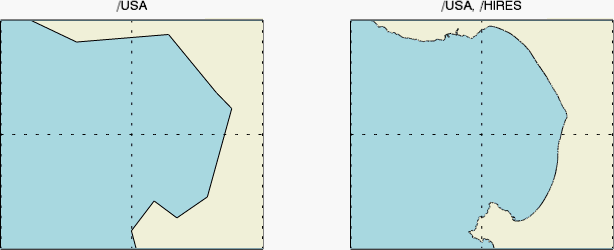

The MAPCONTINENTS function overlays map boundaries on a map in a graphics window. By default the function draws the continental outlines.
The following lines create the map shown at the top of this topic.
; Set up the map projection
map = MAP('Orthographic', $
LIMIT = [30, -150, 60, -90], $
CENTER_LATITUDE = 48, $
CENTER_LONGITUDE = -122, $
FILL_COLOR = "light blue")
; Change some grid properties
grid = map.MAPGRID
grid.LINESTYLE = "dotted"
grid.LABEL_POSITION = 0
grid.FONT_SIZE = 14
; Insert some map boundaries.
m1 = MAPCONTINENTS()
m2 = MAPCONTINENTS(/USA, COMBINE = 0, $
FILL_COLOR = "MOCCASIN")
m3 = MAPCONTINENTS(/CANADA, COMBINE = 0, $
FILL_COLOR = "MOCCASIN")
m4 = MAPCONTINENTS(/LAKES, FILL_COLOR="light blue")
; Retrieve some states and change their color.
cstates = MAP['USA/*C*']
FOREACH c,cstates DO c.FILL_COLOR="goldenrod"
MAP['Saskatchewan'].FILL_COLOR = "goldenrod"
See Map Examples for additional examples using the MAPCONTINENTS function.
graphic = MAPCONTINENTS( [ Filename ] [, Keywords = value ] [, Properties = variable ])
Keywords are applied only during the initial creation of the graphic.
[, / CANADA ] [, COMBINE =0] [, / CONTINENTS ] [, / COUNTRIES ] [, / DEVICE ] [, / LAKES ] [, LIMIT = array ] [, / NOCLIP ] [, / RIVERS ] [, / USA ]
Properties can be set as keywords to the function during creation, or retrieved or changed using the "." notation after creation.
Note: Unlike other keywords in IDL, you cannot use an abbreviated form of the property name when setting them during creation. Instead, you must use the full property name.
ANTIALIAS , CLIP , COLOR , FILL_BACKGROUND , FILL_COLOR , HIDE , HIRES , LINESTYLE , NAME , THICK , TRANSPARENCY , UVALUE , WINDOW
The MAPCONTINENTS function returns a reference to the MapContinents object. Use the returned reference to manipulate the graphic after creation by changing properties or calling methods.
An optional argument giving the name of a shapefile. If this argument is present, then the file will be read and graphics objects will be created for the contained shapes.
Keywords are applied only during the initial creation of the graphic.
Set this keyword to draw the outlines of the Canadian provinces. This keyword is ignored if Filename is used.
By default all of the outlines are combined into a single polygon (COMBINE=1). Set this property to 0 to create each outline as a separate object. This is slower to draw, but allows each individual outline to be retrieved and modified. See the example above for the use of COMBINE=0.
Set this keyword to draw continental outlines. This is the default behavior for MAPCONTINENTS if no other keywords (like /CANADA, /USA, etc.) are passed in, and is provided only for completeness. This keyword is ignored if Filename is used.
Note: Use the HIRES property in conjunction with the CONTINENTS keyword to draw high-resolution continental outlines.
Set this keyword to draw the country outlines. This keyword is ignored if Filename is used.
Set this keyword to draw the outlines of major world lakes. This keyword is ignored if Filename is used.
Set this keyword to a four-element vector of the form [ Latmin , Lonmin , Latmax , Lonmax ] that specifies the boundaries of the clipping region. Shapes that lie outside of these limits will not be drawn. If the NOCLIP keyword is set, then the LIMIT property is ignored.
Note: The default behavior is to use the limits of the current map projection for clipping. You only need to set the LIMIT keyword if you intend to change the map limits later, and you want to ensure that all of the shapes will still be drawn.
By default the MAPCONTINENTS function does not include shapes whose boundaries lie outside of the current map limits (or the value of the LIMIT property). If you later modify the map limit, these excluded shapes will appear to be missing. If you set the NOCLIP keyword to 1, then all of the shapes will be included in the map, even if they lie completely outside of the map limits.
Set this keyword to draw lines representing the major world rivers. The FILL_BACKGROUND and FILL_COLOR properties are ignored for this case. This keyword is ignored if Filename is used.
Set this keyword to draw the outlines of the United States. This keyword is ignored if Filename is used.
Note: Use the HIRES property in conjunction with the USA property to draw high-resolution state outlines.
By default anti-aliasing is used when drawing lines. Set this property to 0 to disable anti-aliasing.
Set this property to 1 to clip portions of the graphic that lie outside of the dataspace range, or to 0 to disable clipping. The default is 1.
Set this property to a string or RGB vector that specifies the color of the outlines. The default is "black".
Set this property to 1 to fill the outlines, or to 0 to turn off the fill.
Set this property to a string or RGB vector that specifies the fill color. If this property is specified then FILL_BACKGROUND is automatically turned on.
Set this property to 1 to hide the graphic, or 0 to show the graphic.
Set this property to 1 to use high-resolution boundary data. This property applies only to the USA and CONTINENTS properties.
Note: Creating a high-resolution map of a large area is a resource-intensive (slow) process.
Note: Since drawing continent outlines is the default behavior of MAPCONTINENTS, the following two lines of code are equivalent:
continents = MAPCONTINENTS( /HIRES )
continents = MAPCONTINENTS( /CONTINENTS, /HIRES )
The following example draws California's Monterey Bay in both low and high resolution.
map1 = MAP('Geographic', $
LIMIT=[36.547178, -122.207183, 36.990214, -121.7], $
FILL_COLOR='light_blue', $
WINDOW_TITLE='Monterey Bay, California', TITLE='/USA', $
LAYOUT=[2,1,1])
; Change some grid properties.
grid1 = map1.MAPGRID
grid1.LINESTYLE = 'dotted'
grid1.LABEL_SHOW = 0
; Draw the coast in low-res
m1 = MAPCONTINENTS(/USA, FILL_COLOR='beige')
map2 = MAP('Geographic', /CURRENT, $
LIMIT=[36.547178, -122.207183, 36.990214, -121.7], $
FILL_COLOR='light_blue', $
TITLE='/USA, /HIRES', LAYOUT=[2,1,2])
; Change some grid properties
grid2 = map2.MAPGRID
grid2.LINESTYLE = 'dotted'
grid2.LABEL_SHOW = 0
; Draw the coast in high-res
m2 = MAPCONTINENTS(/USA, /HIRES, FILL_COLOR='beige')

Set this property to an integer or string specifying the line style for the outline. The allowed values are:
| Index | String (case insensitive) |
|---|---|
| 0 | 'solid' or '-'(dash) |
| 1 | 'dot' or ':'(colon) |
| 2 | 'dash' or '--' (double dashes) |
| 3 | 'dash dot' or '-.' |
| 4 | 'dash dot dot dot' or '-:' |
| 5 | 'long dash' or '__' (double underscores) |
| 6 | 'none' or ' ' (space) |
A string that specifies the name of the graphic. The name can be used to retrieve the graphic using the brackets array notation. If NAME is not set then a default name is chosen based on the graphic type.
Set this property to a value between 0 and 10 that specifies the thickness of the outlines. A thickness of 0 displays a thin hairline on the chosen device. The default value is 1.
An integer between 0 and 100 that specifies the percent transparency of the objects. The default value is 0.
Set this property to an IDL variable of any data type.
This property retrieves a reference to the WINDOW object which contains the graphic.
| 8.0 | Introduced |
| 8.1 |
Added the UVALUE property and the HIRES keyword Added the following methods:: Delete, MapForward, MapInverse |
MAP , MAPGRID , Graphics , Using IDL Graphics